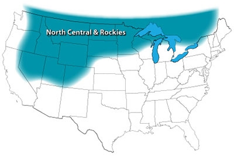

Top Crops: North Central & Rockies
Cold weather favorites in the North Central & Rockies region.
By Barbara Pleasant
April/May 2009
Whether you’re in the mountains or on the plains, the far north is a rough place to garden. It’s important to grow crops that can take a light frost, which might occur unexpectedly any time. Except for tomatoes (which can be grown in pots and rushed indoors) and potatoes (which can be covered with blankets), all of the top-rated crops can survive sudden cold snaps.
You might think cabbage family crops would be strong here, but Saskatchewan gardener Elise Gignac points out that broccoli and other cabbage cousins come under terrific pest pressure because closely related canola is grown commercially nearby. She uses row covers to keep her plants pest-free, or you can spray them every week or so with a natural Bt- or Spinosad-based pesticide. Gignac puts seeds and seedlings of three broccoli varieties (usually ‘Early Dividend,’ ‘Premium Crop’ and ‘Windsor’) in the ground in late June. “We grow different varieties as a hedge against the weather, and the transplanted seedlings and seeds mature at different times,” she says. Gignac says mulching is mandatory. Her favorite mulch for broccoli is alfalfa hay cut in late summer, when it’s usually low in weed seeds.
Even in this cold climate, shallots can make a great sister winter crop to grow alongside garlic, or you can grow shallots from seeds started in spring. In northern Ontario, organic market grower Ted Smith plants shallots exactly like garlic in the fall, topped off with a very deep mulch of straw or compost. “The shallots mulched deeply with compost grow incredible greens which then feed bulbs that end up much larger than those mulched only with straw,” Smith says.
Top 10
- Bulb onion
- Cherry tomato
- Carrot
- Spinach
- Snow/snap pea
- Lettuce
- Bush snap bean
- Slicing tomato
- Potato
- Radish
Other Highly Rated Crops
Cabbage family: Cabbage, collards, kale
Cucumber family: Cucumber, pumpkin, summer squash, winter squash
Leafy greens: Arugula, chard, Chinese cabbage, mâche, mustard (all types), pac choi, sorrel
Legumes: Dry soup bean, fava bean, shell pea
Root crops: Beet, garlic, parsnip, shallot, sunchoke
Tomato family: Tomatillo
Miscellaneous: Asparagus, leek, rhubarb, scallion
Read The Best Crops for Your Garden to find top crops for other U.S. gardening regions.
|
 NATE SKOW The North Central & Rockies gardening region. |
 JENNIFER MAY Dependable and cold-hardy onions are the No. 1 crop favored by gardeners in the cold-climate North Central & Rockies region. |
|